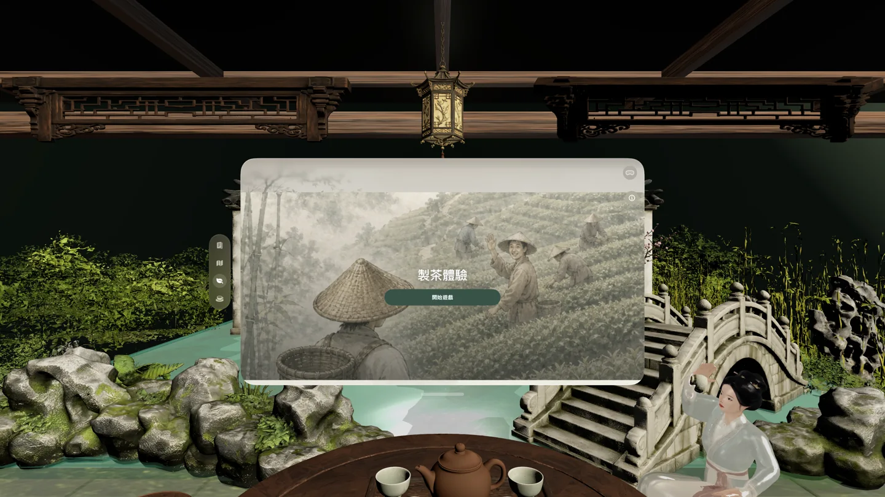
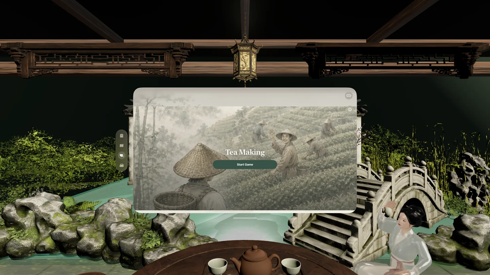

茶經
茶經是一款以茶文化入門為核心的閱讀與探索 App。它從陸羽《茶經》出發，串起古典文本、台灣茶產區、製茶流程與日常茶席，讓茶不只是名詞，而是可以慢慢讀、慢慢看、慢慢理解的文化經驗。
這個 App 適合想認識茶文化的讀者、老師、茶愛好者，也適合正在尋找台灣文化教材的人。它不急著把知識塞滿，而是用閱讀、地圖、互動與故事，幫使用者建立一條走進茶世界的路。
- 可用裝置
- iPhone / iPad / Apple Vision Pro
- 下載方式
- 付費下載

{kind=link}

從《茶經》開始讀茶
App 以直式書法風格呈現《茶經》原文，搭配白話解釋、文化翻譯、註解、罕見字讀音與朗讀功能，讓古典文字不只是被展示，而是能被現代讀者慢慢靠近。
用台灣視角理解茶
除了古典文本，茶經也整理台灣茶產區、茶葉研發設施與政府開放資料摘要，並透過鐵觀音、日月潭紅茶、文山包種茶、東方美人茶、蜜香與小綠葉蟬等故事，把茶放回土地與生活裡。
把製茶變成可觸摸的流程
製茶互動會帶使用者依序經過採茶、萎凋、揉捻、發酵與乾燥焙茶，用短時間的互動理解茶葉如何從茶樹走向茶席。
適合哪些人
- 想從《茶經》入門茶文化的讀者
- 想用台灣茶產區與茶故事做文化教材的老師
- 喜歡茶、器物、書法與東方生活美學的使用者
- 想在 Apple Vision Pro 上探索空間茶席與文化閱讀的人
本機內容與隱私
茶經以內建文本、地圖資料摘要、插圖與本機閱讀體驗為核心。閱讀進度、偏好與互動狀態保存在使用者裝置上；App 不需要開發者營運的帳號，也不會透過開發者伺服器蒐集使用者的閱讀紀錄。
茶經
茶經 is a calm introduction to tea culture, built around Lu Yu's classic text, Taiwan's living tea landscape, tea-making interaction, and everyday tea stories.
The app is for readers, teachers, tea lovers, and anyone looking for a thoughtful way into Taiwanese tea culture. Instead of rushing through facts, it combines reading, maps, interaction, and stories to make tea culture easier to approach.
- Devices
- iPhone / iPad / Apple Vision Pro
- Download
- Paid download

{kind=link}

Start from The Classic of Tea
The app presents The Classic of Tea in a vertical calligraphy-style reading experience, with plain-language explanations, cultural translation, notes, rare-character pronunciation, and read-aloud support.
Understand Tea Through Taiwan
Alongside the classic text, the app introduces Taiwan tea regions, tea research facilities, and curated open-data summaries. Stories about Tieguanyin, Sun Moon Lake black tea, Wenshan Baozhong, Oriental Beauty, honey aroma, and leafhoppers connect tea back to land and daily life.
Turn Tea Making Into a Touch-Based Flow
The tea-making interaction guides users through harvesting, withering, rolling, oxidation, and roasting, using a short guided experience to show how leaves travel from tea tree to tea table.
Useful For
- Readers who want an accessible path into The Classic of Tea
- Teachers looking for Taiwan tea culture learning material
- People who enjoy tea, utensils, calligraphy, and East Asian daily-life aesthetics
- Apple Vision Pro users interested in spatial tea-table and cultural reading experiences
Local Content and Privacy
茶經 is built around bundled text, curated map summaries, illustrations, and local reading experiences. Reading progress, preferences, and interaction state stay on the user's device. The app does not require a developer-operated account and does not collect reading records through developer-operated servers.